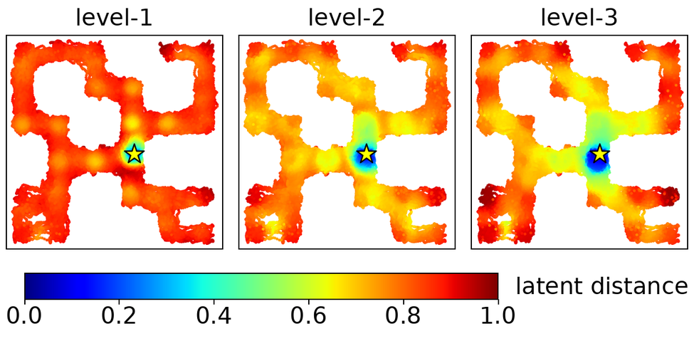
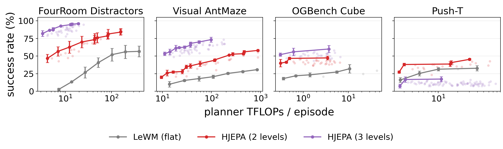

Summary
Long-horizon planning requires reasoning at different timescales and levels of abstraction. Existing action-conditioned JEPA world models predict and plan at a single timescale or with multiple horizons in one shared latent space. This makes prediction and planning unnecessarily hard - a single representation must serve both low-level control and long-range planning, yet details useful for precise control can be difficult to predict over long horizon and irrelevant to measuring progress toward the goal.
H-JEPA is an end-to-end recipe for learning a hierarchy of Joint-Embedding Predictive Architectures. Each higher level predicts farther ahead in its own learned latent space. Planning runs top-down: the highest level plans toward the goal, its predictions become subgoals for the level below, and the lowest level produces primitive actions.
When factors in the data evolve at separated timescales, higher levels discard fast, unpredictable detail while preserving slower, task-relevant state. Across four simulated navigation and manipulation environments, hierarchical planning with H-JEPA improves over a flat JEPA. On Visual AntMaze, a three-level hierarchy raises success from 18% to 73%. With inverse-dynamics supervision, the approach also improves offline planning fidelity on diverse real-robot videos from DROID.

Hierarchical predictive learning
H-JEPA learns a hierarchy of latent world models end-to-end from observation-action trajectories, with each higher level predicting over a longer timescale in its own learned latent space. At every level, action-conditioned prediction is paired with SIGReg [1] to prevent representation collapse. The hierarchy is trained jointly, with gradients from higher-level objectives flowing through lower-level encoders.
Hierarchical planning
H-JEPA plans from coarse to fine: higher levels propose latent subgoals, and lower levels refine them into primitive actions. Each lower-level planner compares its predictions with the assigned subgoal in the higher level’s latent space. After executing an action prefix, planning repeats from the new observation.
Experimental results
We evaluate navigation in Visual AntMaze and FourRoom Distractors, manipulation in Push-T and OGBench Cube, and offline planning on real robot trajectories from DROID. The flat baseline, LeWM, corresponds to training the first-level JEPA on its own.
Learning abstractions
Higher levels selectively lose fast-varying information while retaining slower state. In AntMaze, the ant’s body configuration becomes less recoverable with depth, while its position remains accurately recoverable. In FourRoom, the independently moving distractor fades from higher-level representations while the controlled agent remains visible.
This selectivity is strongest when entities evolve at well-separated timescales. It is not universal: the manipulation datasets have smaller temporal-frequency gaps and show little selective abstraction.
A better space for measuring progress. A fine-grained representation may assign a large distance to states that differ in pose but are equally close to the goal. Projecting a level-1 rollout into a more abstract latent space improves planning even without invoking upper-level planners. Across every tested multilevel AntMaze model, at least one upper-level cost improves success over the native level-1 cost.

Planning performance
On FourRoom, AntMaze, and Cube, adding hierarchy levels up to three improves the success–compute frontier: the planner can achieve higher success with less compute. Two-level H-JEPA also matches or exceeds LeWM across tested budgets on Push-T. Deeper models perform poorly there, likely because short episodes leave much less usable training data for longer training clips.

Planning in action
Example executions comparing LeWM and H-JEPA, with the starting observation and goal shown alongside each rollout.
FourRoom
AntMaze
Push-T
Cube
Real-world videos: DROID
DROID introduces variation in scenes, lighting, and objects across episodes. Here, a purely predictive objective can encode the stable background while discarding the moving robot. We add an inverse-dynamics loss that predicts the action connecting consecutive latent states, encouraging the representation to retain information about the agent.
We evaluate plans offline using Fréchet fidelity, which compares the full three-dimensional end-effector path with an expert trajectory. A stationary arm scores 0%; the expert path scores 100%. This measures path fidelity, rather than closed-loop task success.


The learned second level improves performance on top of the inverse-dynamics baseline while reducing planner compute. The paper includes the full evaluation protocol, metric calibration, ablations, and additional qualitative results.
References
[1] Randall Balestriero and Yann LeCun. LeJEPA: Provable and Scalable Self-Supervised Learning Without the Heuristics. arXiv:2511.08544, 2025.
BibTeX
@misc{zhang2026hjepa,
title = {H-JEPA: End-to-End Learning of Hierarchical
World Models for Visual Planning},
author = {Zhang, Wancong and Terver, Basile and Rabbat, Michael
and LeCun, Yann and Balestriero, Randall},
year = {2026},
url = {https://h-jepa.com/}
}